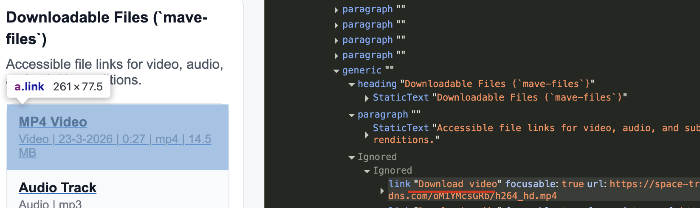

Audit digitale toegankelijkheid van Mave videoplayer
Samenvatting
Wij hebben de Mave videoplayer onderzocht in april 2026. Op dit moment is een deel van de succescriteria als voldoende beoordeeld. In dit rapport lees je welke punten nog verbetering behoeven en hoe deze kunnen worden aangepakt.
#1 - Status van menuknop niet programmatisch beschikbaar
Impact: GrootType: TechniekWCAG: 4.1.2EN: 9.4.1.2
Deze videospeler bevat een knop met drie puntjes die een menu voor ondertitels opent. De toestand van dit menu (uitgeklapt of ingeklapt) is bij het laden van de pagina niet programmatisch bepaald. Het aria-expanded-attribuut wordt pas aan de knop toegevoegd nadat deze is geactiveerd.
Daardoor kan hulpsoftware niet bepalen of het menu in eerste instantie is uitgeklapt of ingeklapt.
Dit probleem geldt ook voor de knop voor de instellingen van audiosporen.
Oplossing
Zorg ervoor dat de status van het menu vanaf het begin programmatisch beschikbaar is. Gebruik het aria-expanded-attribuut op de menuknop en stel deze standaard in op "false" wanneer het menu gesloten is. Werk de waarde bij naar "true" wanneer het menu wordt geopend.
#2 - Tijdslider is niet goed bedienbaar met het toetsenbord
Impact: GrootType: TechniekWCAG: 2.1.1EN: 9.2.1.1
Binnen de videospeler kan de voortgangsbalk (tijdslider) met de muis correct worden gebruikt om naar een ander moment in de video te springen. Bij gebruik van het toetsenbord werkt dit echter niet goed.
Wanneer de slider focus heeft en de gebruiker de pijltoetsen gebruikt om de positie aan te passen, springt de slider direct terug naar de oorspronkelijke positie. Hierdoor is het niet mogelijk om de afspeelpositie betrouwbaar met het toetsenbord te wijzigen.
Dit zorgt ervoor dat toetsenbordgebruikers de functionaliteit niet op dezelfde manier kunnen gebruiken als muisgebruikers.
Oplossing
Zorg ervoor dat de voortgangsbalk ook goed werkt met het toetsenbord. Wanneer een gebruiker de positie aanpast met de pijltoetsen, moet deze wijziging behouden blijven en zichtbaar zijn.
De slider mag tijdens deze interactie niet automatisch terugspringen naar de oorspronkelijke positie.
#3 - Knoppen met alleen iconen hebben een onduidelijke betekenis
In de bedieningsbalk van de videospeler worden knoppen voor ondertiteling en audiotracks uitsluitend weergegeven met iconen, zonder zichtbare tekst.
Hoewel deze knoppen een correcte toegankelijke naam hebben via aria-label, is hun betekenis visueel niet duidelijk. Het pictogram voor ondertiteling (spraakballon met drie puntjes) lijkt bijvoorbeeld op een generieke "meer opties"-knop en wijkt af van gangbare conventies zoals "CC".
Dit kan leiden tot verwarring bij gebruikers, met name voor mensen met cognitieve beperkingen of gebruikers die minder vertrouwd zijn met deze iconen.
Oplossing
Zorg ervoor dat de functie van de knoppen visueel duidelijk is.
Mogelijke oplossingen zijn:
gebruik van meer herkenbare, gestandaardiseerde iconen (bijvoorbeeld "CC" voor ondertiteling)
toevoegen van zichtbare tekstlabels (bijvoorbeeld "CC" of "Audio")
In het onderdeel "Transcript (mave-text)" wordt het woord dat op dat moment wordt uitgesproken gemarkeerd met een achtergrondkleur. Deze beige kleur (#F9DAAF) heeft een te lage contrastverhouding van 1,3:1 ten opzichte van de omliggende grijze achtergrond (#F9FAFB). Hierdoor is de actieve toestand moeilijk waar te nemen.
De contrastverhouding tussen de markering en de aangrenzende kleuren moet minimaal 3,0:1 zijn.
Oplossing
Zorg ervoor dat de visuele aanduiding van het actieve (uitgesproken) woord voldoende contrast heeft ten opzichte van de achtergrond. De contrastverhouding tussen de highlight en de omliggende achtergrond moet minimaal 3,0:1 zijn.
#5 - Transcriptregels zijn niet bedienbaar met het toetsenbord
Impact: GrootType: TechniekWCAG: 2.1.1EN: 9.2.1.1
In het onderdeel "Transcript (mave-text)" kunnen de regels met woorden met een muis worden geactiveerd. Deze aanklikbare elementen zijn echter niet met het toetsenbord bereikbaar. Hierdoor kunnen toetsenbordgebruikers de transcriptfunctionaliteit niet gebruiken.
Alle interactieve elementen moeten volledig met het toetsenbord te bedienen zijn.
Oplossing
Zorg ervoor dat dit element met het toetsenbord kan worden bediend, bijvoorbeeld met de Enter-, Return- of spatiebalktoets.
In het onderdeel "Transcript (mave-text)" kunnen transcriptregels met de muis worden geactiveerd om de video naar een specifiek tijdstip te verplaatsen. Deze regels zijn geïmplementeerd als <p>-elementen met klikfunctionaliteit. Deze elementen hebben geen programmatisch bepaalde interactieve rol. Hierdoor worden ze door schermlezers niet herkend als interactieve bedieningselementen.
Elk HTML-element heeft van zichzelf standaard een rol die zijn functie en gedrag beschrijft. Dit betekent dat het element bepaalde eigenschappen en functies heeft om informatie aan de bezoeker te geven of van de bezoeker te ontvangen. De rol bepaalt dus wat het element doet. Voorbeelden zijn <button> en <a> (link), die automatisch een rol hebben die door browsers en hulpmiddelen zoals schermlezers wordt herkend.
Oplossing
Schermlezers en andere hulpmiddelen moeten de correcte rol van elk element op een webpagina kennen. Zo kunnen ze op een slimme manier met het element omgaan en aan de bezoeker uitleggen wat het element doet. Als een rol niet toegankelijk is, dan betekent dit dat de rol niet correct is ingesteld of dat niet de juiste code is gebruikt.
Zorg ervoor dat elk interactief element een correcte, programmatisch bepaalde rol heeft.
Omdat het activeren van een transcriptregel een actie uitvoert, is een <button>-element de meest geschikte keuze. Vervang de klikbare <p>-elementen door <button>-elementen.
#7 - Zichtbare linktekst ontbreekt in toegankelijke naam
Impact: GrootType: TechniekWCAG: 2.5.3EN: 9.2.5.3

Op deze pagina staan in het onderdeel "Downloadable Files (mave-files)" links. De zichtbare tekst van deze links is echter niet opgenomen in de toegankelijke naam. De link met de tekst "MP4 Video Video | 3-23-2026 | 0:27 | mp4 | 14.5 MB" heeft bijvoorbeeld de volgende toegankelijke naam: "Download video". De toegankelijke namen van deze links komen uit het aria-label-attribuut. Daardoor wordt de zichtbare tekst overschreven en ontstaat er een afwijkende toegankelijke naam.
De zichtbare tekst van de link komt niet voor in de toegankelijke naam. Daardoor kan de link niet worden bediend met spraakbediening. De uitgesproken commando's komen niet overeen met de toegankelijke naam van de link en activeren de link niet.
Oplossing
Zorg ervoor dat de zichtbare tekst van de link voorkomt in de toegankelijke naam, bij voorkeur aan het begin. Pas in dit geval het aria-label aan zodat de zichtbare tekst daarin wordt opgenomen.
Zorg er als mogelijke oplossing voor dat de zichtbare titel (zoals "MP4 Video") van het bestand wordt gebruikt als de hoofdtekst van de link, zodat deze direct de toegankelijke naam vormt. Aanvullende informatie, zoals datum, tijd, formaat en bestandsgrootte, kan als aanvullende beschrijving worden aangeboden. Koppel deze informatie indien nodig programmatisch aan de link met behulp van aria-describedby, zodat schermlezers deze context kunnen voorlezen zonder de hoofdnaam van de link te overschrijven.
Op deze manier blijft de zichtbare tekst leidend voor de toegankelijke naam, terwijl extra informatie beschikbaar is als aanvullende beschrijving.
<a class="link" href="https://space-trial.video-dns.com/oM1YMcsGRb/h264_hd.mp4" download="steve test.mov.mp4" aria-describedby="file-meta-video" > MP4 Video </a>
Onze rapporten zijn anders. Bij het bespreken van de gevonden problemen volgen wij niet de structuur van de norm, maar die van jouw website of app. Hierdoor kun je gewoon per pagina of scherm aan de slag gaan. Wel zo makkelijk! Je vindt verderop een overzicht van alle pagina’s met problemen.
We geven je bij elk gevonden issue een paar voorbeelden, maar niet een complete lijst. Controleer zelf of het probleem ook nog op andere plekken voorkomt. Zie het rapport als een leidraad.
Gebruikte norm
Dit onderzoek laat zien in hoeverre de website op dit moment voldoet aan WCAG 2.2, niveau A en AA. WCAG staat voor Web Content Accessibility Guidelines. Dit is de internationale norm voor digitale toegankelijkheid. De Europese norm EN 301 549 bevat alle eisen van WCAG op niveau A en AA.
In dit rapport hebben we korte beschrijvingen van de succescriteria uit de norm opgenomen, met een algemene uitleg erbij. Wil je ze helemaal lezen? Bekijk dan de documentatie van WCAG.
Gebruikte onderzoeksmethode
We gebruiken de onderzoeksmethode WCAG-EM van het W3C. Het proces ziet er als volgt uit:
vaststellen wat binnen en buiten scope valt
vaststellen welke technologieën zijn gebruikt
steekproef (sample) samenstellen
steekproef onderzoeken
gevonden issues beschrijven
Het grootste deel van het onderzoek doen we met de hand. Voor een deel van de toegankelijkheidseisen gebruiken we automatische tools als ondersteuning, zoals axe-core en Chrome Developer Tools.
Belangrijk om te weten
Dit rapport helpt je om de toegankelijkheid van je website te verbeteren. Maar let op: het is geen definitieve, volledige lijst van alle aanwezige toegankelijkheidsproblemen. Dat zit zo:
Het is een steekproef
Ten eerste is het onderzoek gebaseerd op een steekproef. Die is op een betrouwbare manier genomen, en de meeste problemen zullen daardoor zeker aan het licht komen. Toch kan een probleem net buiten de steekproef vallen. Bij een volgend onderzoek kan het wel ontdekt worden.
Op basis van falsificatie
We beoordelen vanuit het principe van falsificatie. Dat houdt in dat we proberen te bewijzen dat iets niet waar is, in plaats van te bevestigen dat het klopt. ‘Voldoet’ betekent daarom dat we geen reden hebben gevonden om een punt af te keuren. Maar als we later wél een reden vinden, kan het alsnog worden afgekeurd.
Voortschrijdend inzicht
Het komt voor dat de beoordeling van een succescriterium op detailniveau verandert. De norm beschrijft namelijk niet élk mogelijk scenario. Samen met andere onderzoeksbureaus overleggen we hoe we met bepaalde situaties omgaan. Zo kan iets dat nu wordt afgekeurd, soms bij een volgend onderzoek worden goedgekeurd en andersom.
Oplossen leidt tot nieuw probleem
Ten slotte kan het gebeuren dat bij het oplossen van een probleem onbedoeld een nieuw toegankelijkheidsprobleem ontstaat. Dat komt dan bij een volgend onderzoek pas naar voren.
Hoe werkt dit rapport?
Bevindingen bekijken en filteren
Alle gevonden toegankelijkheidsproblemen staan onder Gevonden problemen. Je kunt de bevindingen filteren op:
Impact (Groot, Medium, Klein, Advies) — hoe ernstig is het probleem voor de gebruiker?
Type (Content, Techniek) — moet de inhoud of de techniek worden aangepast?
Status (Open, Opgelost) — welke problemen zijn al verholpen?
Voortgang bijhouden
Je kunt je voortgang op twee manieren bijhouden:
CSV-export — exporteer alle bevindingen als CSV-bestand en laad het in een (online) spreadsheet om met je team samen te werken.
Jira-export — exporteer alle bevindingen als Jira-compatibel CSV-bestand. Importeer het via Jira > Issues > Import issues from CSV. Bevindingen worden aangemaakt als bugs met prioriteit op basis van impact.
Registreer in de browser — activeer deze optie om per bevinding bij te houden of het is opgelost. Je voortgang wordt opgeslagen in je browser. Niemand anders kan je resultaat zien. Let op: de voortgang is gekoppeld aan je browser. Als je een andere browser of een ander apparaat gebruikt, begint de telling opnieuw.
Plan van aanpak — download een geprioriteerd plan van aanpak om de gevonden problemen stap voor stap op te lossen. Dit is beschikbaar bij audits vanaf maart 2026.
Link naar een specifieke bevinding delen
Bij elke bevinding verschijnt een link-icoon wanneer je er met de muis overheen gaat. Klik op dit icoon om de directe link naar die bevinding te kopiëren. Je kunt deze link plakken in een e-mail of chatbericht, bijvoorbeeld om een vraag te stellen aan Proper Access over een specifiek punt.